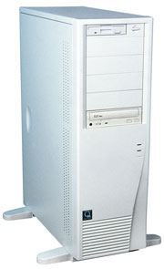
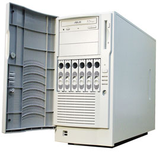
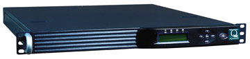

Андрей Ездаков
Самые важные характеристики серверов - вовсе не производительность процессора, частота системной шины, скорость и емкость дисковой подсистемы. Сервер - это не продукт, а процесс; он должен работать постоянно, а в случае выхода из строя восстанавливаться быстро. Конечно, такие характеристики, как соотношение цена/производительность и масштабируемость, тоже важны, но основные показатели - время наработки на отказ ("живучесть" сервера) и срок его восстановления. Поэтому для современных производителей серверов чрезвычайно актуальны все решения, приводящие к снижению вероятности выхода сервера из строя.
Первое из такого рода решений - это конструктивно заменяемые в горячем режиме жесткие диски, блоки питания и, если необходимо, процессоры. Второе - постоянная работа с поставщиками комплектующих. В этом плане использование продукции признанных мировых лидеров приводит к увеличению срока жизни изделия. Ведь, как известно из теории управления, в сложноорганизованной поточной системе функционирование зависит от параметров наислабейшего звена. И в-третьих, для скорейшего восстановления работоспособности сервера необходимы качественные сервисные центры и соответствующие договоренности с поставщиками комплектующих.
Один из ведущих российских производителей серверов компания "Аквариус" (http://www.aq.ru) выпускает широкий спектр современных серверов - от базовых моделей для небольших рабочих групп до мощных четырехпроцессорных решений. На всех этапах проектирования и производства серверов особое внимание специалисты компании уделяют стабильности и качеству их функционирования. Все модели проходят тщательное тестирование на совместимость и сертифицируются с различными ОС, а после сборки каждый экземпляр подвергается обязательным 72-часовым испытаниям в термокамере.
За годы работы специалисты компании разработали эффективные методики выявления и устранения неполадок. Многие годы инженеры ведут базы данных по всем неисправностям, встретившимся ранее в ходе эксплуатации компьютеров. Это позволяет быстро и эффективно решать возникающие у пользователей проблемы, а также постоянно совершенствовать систему тестирования и модельный ряд техники.
Сейчас компания предлагает три основные категории серверов: начального уровня AquaServer E (серия Economy), серверы для бизнеса AquaServer P (серия Professional) и специальные серверы для провайдеров услуг связи и Интернета AquaServer T (серия Telecom).
Вся компьютерная техника марки Aquarius, в том числе и серверы AquaServer, собирается из комплектующих ведущих производителей аппаратного обеспечения. Тщательно подобранная конфигурация, качественные комплектующие, 100%-ный входной контроль компонентов и многоэтапное тестирование готовой продукции обеспечивают высокую надежность. В комплект поставки серверов входит документация и руководство по эксплуатации на русском языке.
Основной канал реализации серверов AquaServer - дистрибьюторы и авторизованные бизнес-партнеры "Аквариус" (компания не работает по модели прямых продаж). Все предлагаемые компанией серверы имеют единый стандартный срок полного гарантийного обслуживания - три года. По желанию заказчика с ним может быть заключен специальный договор о предоставлении дополнительных гарантийных условий.
Начальный уровень - AquaServer E
Сервер - это сердце компьютерной сети вне зависимости от ее размеров, качество его работы важно не только для крупных предприятий, но и для небольших организаций или рабочих групп. Специально для таких заказчиков компания "Аквариус" разработала семейство серверов AquaServer E, отличительные особенности которого - достаточная надежность и высокая масштабируемость при невысокой цене. По надежности и масштабируемости они полностью соответствуют требованиям к современным серверам начального уровня. Модели этой серии специалисты "Аквариус" рекомендуют использовать в качестве файловых серверов и принт-серверов в небольших рабочих группах либо как серверы электронной почты.
|  | Рис. 1. Модель начального уровня семейства AquaServer E.
|
В семейство AquaServer E входят две модели. Первая, AquaServer E70, построена на базе процессора Intel Pentium 4 с частотой от 1,8 до 3,2 ГГц и объемом кэш-памяти 512 Кбайт и набора микросхем Intel 875P, собирается в корпусе типа Big Tower с габаритами 192х618х460 мм. Системная шина платы S875WP1-E поддерживает частоты 400, 533 или 800 МГц и имеет четыре слота для быстродействующей двухканальной памяти DDR с коррекцией ошибок, общим объемом до 4 Гбайт. Графическая подсистема AquaServer E70 основана на встроенном контроллере ATI Rage XL с 8 Мбайт выделенной памяти или на внешней видеоплате, устанавливаемой в разъем AGP 8X. Дисковая подсистема может содержать до четырех жестких дисков стандарта ATA или SATA емкостью не менее 40 Гбайт каждый.
AquaServer E70 может быть функционально расширен за счет использования трех 32-разрядных слотов PCI, слота AGP 8X, двух встроенных каналов ATA-100 и шести портов Serial ATA с поддержкой RAID уровней 0, 1 или 10. Для подключения к сетям служат встроенные Ethernet-адаптеры Intel PRO/100+ и Intel PRO/1000 XT. Для работы с внешними носителями в сервере имеются 52-скоростной привод CD-ROM и стандартный 3,5-дюйм флоппи-дисковод. Кроме перечисленного выше, в сервере есть еще два разъема PS/2 для подключения клавиатуры и мыши, четыре USB-порта, параллельный и последовательный порты.
Сервер имеет встроенные средства удаленного мониторинга состояния системы, включая контроль температурного режима компонентов и работоспособности системы охлаждения, средства доступа к системному журналу и управления конфигурацией сервера.
AquaServer E70 сертифицирован на совместимость с ОС Microsoft Windows 2000 Server/2000 Advanced Server и, кроме того, может работать под управлением Microsoft Windows XP/2003 Server и Red Hat Linux версии 8.0.
Более мощная модель семейства, AquaServer EX200, построена уже на базе одного или двух процессоров Intel Xeon с тактовой частотой от 1,8 до 3,0 ГГц и объемом кэш-памяти 512-1024 Кбайт и системной платы Gigabyte GA-8IPXDR-E с набором микросхем Intel E7501. Сервер собирается в корпусе типа Big Tower с линейными размерами 216х451х600 мм. Высокая производительность обеспечивается поддержкой технологии Hyper-Threading, использованием интегрированного контроллера Ultra320 SCSI и быстродействующей двухканальной памяти DDR с коррекцией ошибок, максимальный объем которой составляет 12 Гбайт. Видеоподсистема реализуется только с помощью встроенного контроллера ATI Rage XL с 8 Мбайт выделенной памяти. Дисковая подсистема сервера содержит до четырех жестких дисков стандарта SCSI емкостью не менее 36 Гбайт каждый и может быть организована в RAID-массив благодаря поддержке Intel RAIDIOS в базовой конфигурации.
AquaServer EX200 также имеет хорошие возможности для расширения благодаря наличию четырех 64-разрядных слотов PCI-X с частотой до 133 МГц и двух 32-разрядных PCI. Подключение к сетям Ethernet обеспечивает интегрированный двухканальный гигабитный адаптер Intel 82546EB. Для работы с внешними носителями информации используются CD-ROM и 3,5-дюйм флоппи-дисковод.
Так же, как и младшая модель, AquaServer EX200 оснащается двумя разъемами PS/2 для подключения клавиатуры и мыши, четырьмя USB-, параллельным и последовательным портами. Сервер может работать под управлением ОС Microsoft Windows NT 4.0 Server, Service Pack 6/2000 Server/XP/2003 Server, Red Hat Linux различных версий, SuSE Linux 8.0 Kernel 2.4.18-64GB-SMP, Novell NetWare 6.0. Сервер имеет сертификат на совместимость с Microsoft Windows 2000 Server/2000 Advanced Server.
Бизнес-серверы - AquaServer P
Бизнес-серверы AquaServer P отличаются значительным запасом вычислительной мощности и высокой надежностью, в них реализованы широкие возможности масштабирования. Все семь моделей семейства построены на базе хорошо зарекомендовавших себя платформ Intel. Тщательный подбор комплектующих, входное тестирование компонентов и обязательное 72-часовое тестирование готовой продукции в термокамере в значительной степени гарантируют, что эти устройства готовы к работе даже в неблагоприятных условиях.
Двухпроцессорные серверы этого семейства, AquaServer PX101 и PX102, спроектированные специалистами научно-технического центра "Аквариус", соответствуют требованиям к данной категории устройств. При разумной цене они обладают рядом характеристик, обычно присущих более дорогим решениям. В этих моделях используются процессоры Intel Xeon с тактовой частотой до 3,0 ГГц и технологией Hyper-Threading, поддерживается режим горячей замены жестких дисков и резервных блоков питания. Эти серверы могут устанавливаться в 19-дюйм монтажную стойку. Поэтому специалисты "Аквариус" рекомендуют использовать AquaServer PX101 и PX102 в качестве серверов средней рабочей группы, выполняющих функции файл-сервера, сервера небольших баз данных и электронной почты.
|  | Рис. 2. Бизнес-сервер семейства AquaServer P.
|
В эти устройства на системную плату Gigabyte GA-8IPXDR-E с набором микросхем Intel E7501/ICH3 устанавливается до двух процессоров с объемом кэш-памяти 512 Кбайт. Частота системной шины составляет 400/533 МГц. Объем ОЗУ типа ECC DDR SDRAM может достигать 12 Гбайт. Функционал этих серверов может быть расширен за счет четырех слотов PCI-X 64/100/133 и двух PCI 32/33. В дисковой подсистеме используется двухканальный интегрированный контроллер Ultra320 SCSI. Дисковая подсистема включает до шести SCSI-дисков с возможностью замены в горячем режиме, которые могут объединяться в RAID-массив благодаря поддержке Intel RAIDIOS. В модели AquaServer PX102 поддерживается и замена любого из двух источников питания мощностью 500 Вт в горячем режиме. Видеоподсистема AquaServer PX101 и PX102 реализована с помощью встроенного контроллера ATI Rage XL с 8 Мбайт выделенной видеопамяти.
Для работы с внешними носителями серверы оснащаются 52-скоростным приводом CD-ROM и 3,5-дюйм флоппи-дисководом. Подключение к локальным сетям обеспечивает интегрированный двухканальный гигабитный Ethernet-адаптер Intel PRO 10/100/1000. Помимо двух разъемов PS/2 для подключения клавиатуры и мыши, эти устройства, собираемые в конвертируемых корпусах типа Tower/Rack 5U с линейными размерами 217х450х643 мм, оснащаются двумя USB-портами, а также параллельным и последовательным портами.
Обе модели могут работать под управлением ОС Microsoft Windows NT 4.0 Server, Service Pack 6/2000 Server/XP/2003 Server, Red Hat Linux различных версий, SuSE Linux 8.0 Kernel 2.4.18-64GB-SMP, Novell NetWare 6.0. Они имеют сертификат на совместимость с Microsoft Windows 2000 Server/2000 Advanced Server.
Двухпроцессорный сервер AquaServer PI201 открывает новую страницу в продуктовой линейке профессиональных серверов производства "Аквариус". Он построен на базе 64-разрядных процессоров Intel Itanium 2 и серверной платформы Intel SR870BH2 с набором микросхем Intel E8870. Это решение рассчитано на обслуживание задач с большим объемом 64-разрядных вычислений, таких, как управление большими и сверхбольшими СУБД, организация OLAP и систем принятия решений, создание вычислительных комплексов для инженерных систем CAD/CAM/CAE, а также сложных научных задач, например, моделирования белковых структур, квантовохимических, газодинамических и геофизических расчетов, метеорологических исследований и т. п.
В AquaServer PI201 устанавливается до двух процессоров Intel Itanium 2 с тактовой частотой 1,3-1,5 ГГц и объемом кэш-памяти 6 Мбайт. Объем оперативной памяти типа ECC SDRAM может составлять до 16 Гбайт. Встроенный двухканальный контроллер Ultra320 SCSI поддерживает два жестких диска с возможностью замены в горячем режиме. Видеоподсистема сервера базируется на встроенном контроллере ATI Rage XL с 8 Мбайт выделенной видеопамяти, подключение к локальным сетям обеспечивает интегрированный двухканальный Ethernet-адаптер - Intel PRO 10/100/1000.
Для обслуживания внешних носителей в AquaServer PI201 используется комбинированный привод DVD/CD-RW. Помимо двух портов USB, параллельного и последовательного порта, расположенных на задней панели, на переднюю панель сервера выведено еще два USB-порта. Модель монтируется в корпусе Rack 2U с габаритами 449x87x747 мм. Все три источника питания (мощностью 350 Вт каждый) поддерживают режим горячей замены.
В AquaServer PI201 реализована технология удаленного управления на базе ПО Intel Server Management 6.1. Сервер работает под управлением ОС Microsoft Windows 2003 Server, Red Hat Enterprise Linux AS2.1, Red Hat Enterprise Linux WS2.1 и SuSE Enterprise Server 8. Он имеет также сертификат на совместимость с Microsoft Windows Server 2003 64-bit edition.
Двухпроцессорные серверы AquaServer PX201 и PX202 построены на базе хорошо зарекомендовавших себя платформ Intel. В них используются процессоры Intel Xeon с тактовой частотой 1,8-3 ГГц с поддержкой технологии Hyper-Threading и кэш-памятью объемом 512 Кбайт, устанавливаемые на системной плате SE7501HG2 (Intel Harlingen) с набором микросхем Intel E7501. Объем быстродействующей двухканальной памяти DDR с расширенным режимом коррекции ошибок может достигать 12 Гбайт. Для расширения функциональных возможностей имеются следующие слоты: один PCI-X 64/100/133, два PCI-X 64/100, три PCI 32/33. Стандартные возможности графической системы обеспечивает встроенный контроллер ATI Rage XL с 8 Мбайт выделенной видеопамяти.
Двухканальный контроллер Ultra320 SCSI в максимальной конфигурации поддерживает работу десяти жестких SCA-дисков с возможностью замены в горячем режиме и организации RAID-массива уровней 0 и 1. Обе модели собираются в конвертируемых корпусах типа Tower/Rack 5U с габаритами 220х450х660 и 480х220х635 мм соответственно с функцией замены вентиляторов в горячем режиме. Кроме того, AquaServer PX202 оснащается как минимум двумя блоками питания. При установке третьего, резервного (избыточного), блока питания сервер поддерживает режим горячей замены любого из трех блоков.
Подключение к локальным вычислительным сетям обеспечивают интегрированные одноканальные адаптеры стандарта Ethernet - Intel PRO 10/100/1000 и Intel PRO 10/100. Для работы с внешними носителями серверы оснащаются 52-скоростным приводом CD-ROM и стандартным 3,5-дюйм дисководом. Помимо двух разъемов PS/2 для подключения клавиатуры и мыши, эти серверы имеют три USB-порта, параллельный и последовательный порты на задней панели и еще один USB-порт на передней.
Для удаленного управления серверами используется утилита Intel Server Control. AquaServer PX201 и PX202 функционируют под управлением ОС Microsoft Windows 2000 Server, Service Pack 3/2000 Advanced Server, Service Pack 3/2003 Server, Red Hat Linux, Novell NetWare, Caldera Open Unix и SuSE Linux. Имеется сертификат на совместимость с Microsoft Windows 2000 Server/2000 Advanced Server.
Еще более мощный четырехпроцессорный сервер AquaServer P404 построен на базе процессоров Intel Xeon MP с тактовой частотой 2,7 ГГц, объемом кэш-памяти 1 или 2 Гбайт и серверной платформы Intel SPSH4 с набором микросхем ServerWorks Grand Champion HE. Он поставляется в корпусе типа Tower или Rack 7U с габаритами 313х460х670 или 485х312х644 мм соответственно. Сервер масштаба предприятия Р404 обеспечивает производительность, достаточную для работы с базами данных объемом до 100 Гбайт. Объем ОЗУ типа ECC SDRAM в сервере может достигать 24 Гбайт.
Среди восьми слотов расширения AquaServer P404 имеется четыре стандарта PCI-X 64/100 с возможностью подключения в горячем режиме. Работу графической подсистемы сервера поддерживает встроенный видеоадаптер ATI Rage XL с 4 Мбайт выделенной памяти. Двухканальный контроллер Ultra320 позволяет включить в дисковую подсистему сервера до десяти жестких SCA-дисков, которые могут заменяться в горячем режиме. В сервере также поддерживается режим горячей замены вентиляторов и двух из трех блоков питания мощностью 600 Вт (по механизму, описанному выше для модели AquaServer PX202).
Два интегрированных одноканальных сетевых адаптера Intel PRO 10/100/1000 и Intel PRO 10/100 позволяют подключить сервер к локальным сетям. Доступ к внешним носителям обеспечивают 52-скоростной привод CD-ROM и 3,5-дюйм флоппи-дисковод. Часть сетевых, параллельных, последовательных и USB-портов для удобства доступа размещена на передней панели сервера.
Для удаленного управления AquaServer P404 комплектуется ПО Intel Server Control. Сервер работает под управлением ОС Microsoft Windows 2000 Server, Service Pack 3/2000 Advanced Server, Service Pack 3/2003 Server, Red Hat Linux, Novell NetWare и Caldera Open Unix. Он сертифицирован на совместимость с Microsoft Windows 2000 Server/2000 Advanced Server/2003 Server.
Последняя, седьмая модель семейства бизнес-серверов компании "Аквариус" AquaServer PI406 представляет собой сервер масштаба предприятия. Это устройство обеспечивает надежное масштабируемое решение с высоким уровнем готовности и вычислительной мощности. Поскольку сервер рассчитан не только на процессоры Itanium 2, но и на будущие процессоры этой архитектуры, он обеспечивает защиту инвестиций и плавный переход к архитектуре следующего поколения.
Сервер собирается в корпусе Rack 4U с габаритами 445х178х711 мм для установки в стандартную 19-дюйм монтажную стойку. Основа AquaServer PI406 - до четырех процессоров Intel Itanium 2 (архитектуры с явным параллелизмом - EPIC) с тактовой частотой от 1,0 до 1,5 ГГц и системная плата Intel Server Platform SR870BN4 с набором микросхем Intel E8870. В сервере имеется 16 слотов для установки до 32 Мбайт оперативной памяти типа DDR SDRAM с расширенным использованием кода коррекции ошибок ECC. Видеоподсистема сервера базируется на интегрированном контроллере ATI Rage XL с 8 Мбайт выделенной видеопамяти. Встроенный двухканальный контроллер Ultra320 SCSI позволяет установить до трех жестких дисков. Восемь слотов расширения - три PCI-X 64/133 PHP и пять PCI-X 64/100 PHP с возможностью замены любой платы расширения в горячем режиме - дают возможность строить на базе этой модели широкомасштабируемые решения.
Продуманный эргономичный дизайн AquaServer PI406 обеспечивает минимизацию трудозатрат не только при обслуживании блоков питания, вентиляторов, жестких дисков, плат расширения (все эти компоненты сервера заменяются в горячем режиме), но и при монтаже процессоров и модулей памяти. Сетевое взаимодействие сервера поддерживает адаптер i82540EM 10/100/1000, а работу с внешними носителями - низкопрофильный DVD-привод. Имеются параллельный, последовательный и четыре USB-порта.
Удаленное управление AquaServer PI406 поддерживает ПО Intel Server Management 6.0 и аппаратное средство управления и диагностики - IPMI 1.5. Устройство функционирует под управлением ОС Microsoft Windows 2003 Server и Red Hat Linux.
Коммуникационные серверы - AquaServer T
Как крупные, так и небольшие узлы связи, телекоммуникационных и телематических услуг требуют особых условий функционирования, высокой плотности вычислительной мощности и портов, надежности, резервирования, распределения мощности и нагрузки. На серверы этих узлов возлагается особая ответственность. Они должны быть мощными, наращиваемыми, надежными и простыми в управлении и модернизации. В выпускаемую компанией "Аквариус" серию коммуникационных серверов AquaServer T входит семь моделей, отвечающих этим требованиям.
|  | Рис. 3. Коммуникационный сервер семейства AquaServer T.
|
Модель AquaServer T114 представляет собой компактное устройство форм-фактора Rack 1U с габаритами 483х44х570 мм. Сервер построен на базе процессора Intel Pentium 4 с тактовой частотой от 1,8 до 3,0 ГГц и кэш-памятью 512 Кбайт, устанавливаемого в системную плату с набором микросхем Intel 845E. Объем ОЗУ типа DDR с расширенным использованием кода коррекции ошибок ECC может составлять до 2 Гбайт. Видеоподсистема работает на базе встроенного контроллера ATI Rage XL с 8 Мбайт выделенной видеопамяти. Кроме штатного привода CD-ROM и 3,5-дюйм флоппи-дисковода, сервер поддерживает до двух стационарных жестких дисков с интерфейсом Ultra ATA/100.
Для подключения к локальной сети AquaServer T114 оснащен двухпортовым встроенным контроллером Fast Ethernet 10/100 Мбит Intel 82550, поддерживающим отказоустойчивые режимы горячего резервирования и балансировки сетевой нагрузки. Благодаря этому сервер остается доступным даже при отказе одного из сетевых соединений. Для подключения дополнительных устройств используются два слота: полноформатный и низкопрофильный PCI 32/33. Имеется широкий набор внешних интерфейсов, среди которых четыре USB-порта - два на задней панели и еще два на передней для удобства доступа после монтажа в стандартную 19-дюйм стойку.
AquaServer T114 может работать под управлением ОС Microsoft Windows NT 4.0 Server, Service Pack 6/2000 Server, Service Pack 3/2000 Advanced Server, Service Pack 3/2003 Server; Novell NetWare 5.0; Red Hat Linux 8.0 Kernel 2.4.18-14; SuSE Linux 8.0 Kernel 2.4.18-64GB.
Компактный и мощный двухпроцессорный телеком-сервер форм-фактора 1U (483x44x650 мм) - AquaServer T125 построен на базе процессоров Intel Xeon с тактовой частотой 1,8-3,0 ГГц и кэш-памятью 512 Кбайт и набора микросхем Intel E7501. Объем ОЗУ сервера составляет до 12 Гбайт; графическая система работает на базе встроенного контроллера ATI Rage XL с 8 Мбайт выделенной видеопамяти. Отказоустойчивость дисковой подсистемы сервера обеспечивают три корзины для жестких дисков стандарта SCSI с возможностью замены в горячем режиме и встроенный контроллер Ultra320 SCSI с поддержкой RAID уровней 0 или 1. Предусмотрена возможность установки дополнительного RAID-контроллера с поддержкой дисковых массивов более высокого уровня. Имеется и дополнительный внешний отсек для установки низкопрофильного накопителя, например, DVD/CDRW combo.
Сервер также комплектуется низкопрофильным приводом DVD-ROM и 3,5-дюйм дисководом, вместо которого при желании можно установить дополнительный SCSI-винчестер с корзиной для замены в горячем режиме. Для подключения к локальной сети в AquaServer T125 имеются два порта встроенного контроллера гигабитного Ethernet - Intel 82546EB, поддерживающие отказоустойчивые режимы горячего резервирования и балансировки сетевой нагрузки. Для подключения дополнительных устройств используются два слота: полноформатный PCI-X 64/100 и низкопрофильный PCI-X 64/66. Набор внешних интерфейсов полностью идентичен предыдущему устройству.
Сервер совместим с широким спектром ОС: Microsoft Windows NT 4.0 Server, Service Pack 6/2000 Server, Service Pack 3/2000 Advanced Server, Service Pack 3/2003 Server; Novell NetWare 6.0; Red Hat Linux 7.3 Kernel 2.4.18-3; Red Hat Linux 8.0 Kernel 2.4.18-14; Turbo Linux Server 8.0 Kernel 2.4.18-5smp; SuSE Linux 8.0 Kernel 2.4.18-64GB; SCO Unix Ware 7.1 Kernel 7.1.1; SCO Open Unix 8.0 Kernel 7.1.2; SCO Unix Ware 7.1.3 Kernel 7.1.3; Sun Solaris 9. Отметим, что AquaServer T125 стал первым из отечественных серверов, сертифицированным на совместимость с Sun Solaris 9.
В мощные двухпроцессорные серверы AquaServer T222 и T222R форм-фактора 2U с габаритами 483x88x664 мм также устанавливаются процессоры Intel Xeon с тактовой частотой до 3,0 ГГц и кэш-памятью 512 Кбайт. Но они строятся на базе набора микросхем ServerWorks CMIC-SL/CSB6. В этих моделях объем ОЗУ типа DDR с расширенным использованием кода коррекции ошибок ECC может быть доведен до 4 Гбайт.
Высокая надежность этих устройств обеспечивается целым рядом функций резервирования. Два интегрированных серверных адаптера ЛВС (гигабитный i82545EM и Fast Ethernet 82550PM) можно не только объединять для повышения пропускной способности, но и использовать в качестве основного и запасного для более надежного соединения сервера с вычислительной сетью. Для всех шести жестких дисков с интерфейсом Ultra320 SCSI, работающих под управлением интегрированного контроллера Adaptec AIC-7902W, поддерживается режим горячей замены. Надежность хранения данных также можно повысить за счет установки дополнительного RAID-контроллера. Кроме того, сервер AquaServer Т222R оснащается отказоустойчивой системой питания, состоящей из двух блоков мощностью по 460 Вт с возможностью горячей замены (в AquaServer Т222 - один блок питания мощностью 460 Вт).
Видеоподсистема серверов построена на базе интегрированного контроллера ATI Rage XL с 8 Мбайт выделенной видеопамяти. Для подключения дополнительных устройств используются полноформатный слот PCI-X 64/100 и низкопрофильный PCI-X 64/66. Набор внешних интерфейсов аналогичен AquaServer T125, столь же широк и выбор совместимых операционных систем.
Еще две модели, AquaServer T230 и T230R, тоже собираются в корпуса типа Rack 2U с габаритами 480х88х638 мм. Эти двухпроцессорные серверы оснащаются процессорами Intel Xeon с тактовой частотой до 3,0 ГГц и кэш-памятью 512 Кбайт на системной плате с набором микросхем Intel E7501. Помимо всех функций, повышающих надежность и устойчивость работы системы, которые используются в предыдущей паре моделей (AquaServer Т230R, аналогично Т222R, оснащается отказоустойчивой системой питания из двух блоков мощностью по 500 Вт с горячей заменой, а AquaServer T230 - одним блоком питания мощностью 480 Вт), в этих серверах поддерживаются развитые функции удаленного управления Intel Server Management 5.5 и RAID уровней 0 или 1 на штатном Ultra320 SCSI-контроллере (в базовой конфигурации). Микросхемы RAIDIOS позволяют с минимальными дополнительными затратами увеличить живучесть дисковой подсистемы с помощью RAID более высоких уровней. Средства удаленного управления предназначены для дистанционного контроля состояния компонентов сервера и работы с консолью через ЛВС, они облегчают сервисное обслуживание, снижают временные и финансовые затраты на администрирование сетей, а также уменьшают совокупную стоимость эксплуатации серверов.
Объем ОЗУ типа ECC DDR SDRAM в AquaServer T230 и T230R может составлять до 12 Гбайт. Графическая система серверов работает на базе встроенного контроллера ATI Rage XL с 8 Мбайт выделенной видеопамяти. Для подключения дополнительных устройств используются два слота: полноформатный PCI-X 64/100 и низкопрофильный PCI-X 64/66. Набор внешних интерфейсов такой же, как у предыдущих моделей, с тем лишь отличием, что на передней панели имеется один USB-разъем. Зато на передней панели сервера есть VGA-разъем для подключения монитора. Эти серверы работают под управлением ОС Microsoft Windows 2000 Server, Service Pack 3/2000 Advanced Server, Service Pack 3; Red Hat Linux 8; SuSE Enterprise Server 8; Novell NetWare 6.
И наконец, последний телеком-сервер, AquaServer TCM24, специально разработан компанией "Аквариус" для управления комплексами IP-телефонии. Он одним из первых прошел сертификацию на совместимость с ПО для управления телефонными вызовами Cisco CallManager 3.3. Это ПО может быть установлено в одном офисе либо объединять множество территориально разнесенных филиалов. С его помощью поддерживается возможность кластеризации AquaServer TCM24 для работы в особо крупных сетях IP-телефонии.
AquaServer TCM24 построен на базе процессора Intel Pentium 4 с тактовой частотой 2,4 ГГц и объемом кэш-памяти 512 Кбайт, системной платы с набором микросхем Intel 845E. Он оснащен памятью DDR с коррекцией ошибок объемом 1 Гбайт и видеоподсистемой на базе интегрированного контроллера ATI Rage XL с 8 Мбайт выделенной видеопамяти. В AquaServer TCM24 устанавливается один жесткий диск стандарта IDE емкостью 40 Гбайт, а также привод CD-ROM или DVD-ROM.
В сервере имеется двухпортовый интегрированный серверный адаптер ЛВС Intel PRO 10/100; оба порта можно либо объединить для наращивания пропускной способности, либо использовать в качестве основного и резервного. На передней панели имеются два USB-порта. AquaServer TCM24 собирается в корпусе типа Rack 1U с габаритами 483x44x570 мм. Сервер работает под управлением Microsoft Windows 2000 Server.